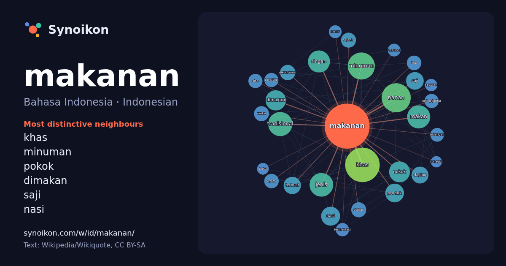

Bahasa Indonesia · Indonesian · popular word
makanan
“food” · The words found around it in 1272 instances from Indonesian Wikipedia, Wikiquote.

Most distinctive neighbours
- khas 47×
- minuman 42×
- pokok 29×
- dimakan 27×
- saji 24×
- nasi 24×
- ringan 23×
- makan 22×
- tradisional 21×
- bahan 21×
- olahan 18×
- dikonsumsi 18×
- jaring-jaring 17×
- terbuat 16×
- sejenis 15×
- daging 15×
- rantai 15×
- kue 14×
- fermentasi 14×
- penutup 13×
× = how many times more often than in general Indonesian Wikipedia text.
Most frequent neighbours
- khas 96
- bahan 68
- minuman 59
- indonesia 58
- tradisional 47
- jenis 45
- makan 43
- ringan 39
- pokok 35
- dimakan 33
- salah 31
- nasi 29
- laut 28
- produk 28
- memiliki 27
- orang 25
- saji 25
- terbuat 24
- daging 23
- jawa 23
In context
- merupakan nutrien dalam makanan yang dibutuhkan oleh tubuh. Cairan untuk dikonsumsi sering disebut minuman, tetapi kata 'makanan' juga bisa digunakan untuk Wikipedia snippets · Makanan
- Memek adalah kudapan khas Pulau Simeulue di Aceh, Indonesia. Makanan ini mirip bubur dan terbuat dari beras ketan dan pisang. Memek ditetapkan sebagai Wikipedia snippets · Memek (makanan)
- Ayam geprek adalah makanan ayam goreng tepung khas Indonesia yang diulek atau dilumatkan bersama sambal bajak (Sambal bajak adalah sambal khas dari Jawa Wikipedia snippets · Ayam geprek
- Ronde adalah makanan tradisional Tionghoa dengan nama asli Tāngyuán (Hanzi tradisional: 湯圓; Hanzi sederhana: 汤圆; Pinyin: tāngyuán). Nama tangyuan merupakan Wikipedia snippets · Ronde (makanan)
- Makanan laut atau boga bahari (bahasa Inggris: seafood) adalah sebutan untuk makanan berupa hewan dan tumbuhan laut yang ditangkap, dipancing, diambil Wikipedia snippets · Makanan laut
- Rantai makanan adalah suatu ekosistem makhluk hidup yaitu perpindahan energi makanan dari sumber daya tumbuhan melalui seri organisme atau melalui jenjang Wikipedia snippets · Rantai makanan
- ditemukan. Lemper Lontong Pehcun Bánh chưng, makanan Vietnam Tamale, makanan Amerika Tengah Ketupat 15 Nama Makanan di KBBI Serapan Bahasa Cina, Tahu Koloke Wikipedia snippets · Bacang (makanan)
- Lupis merupakan makanan khas Indonesia terutama daerah Yogyakarta. Ada dua bentuk lupis yang umum ditemui, yakni berbentuk segitiga atau bulat memanjang Wikipedia snippets · Lupis (makanan)
More Indonesian words
- air
- anjing
- bahasa
- emas
- iklim
- jantung
- jembatan
- kebenaran
- kehidupan
- kekuasaan
- keluarga
- kematian
- kereta
- kerja
- kesehatan
- kesenian
- kucing
- lingkungan
- sains
- sejarah
- tuhan
- uang
Precomputed on 2026-10-09 with default settings (±5 words, medium corpus). The interactive map can refresh it with live data.